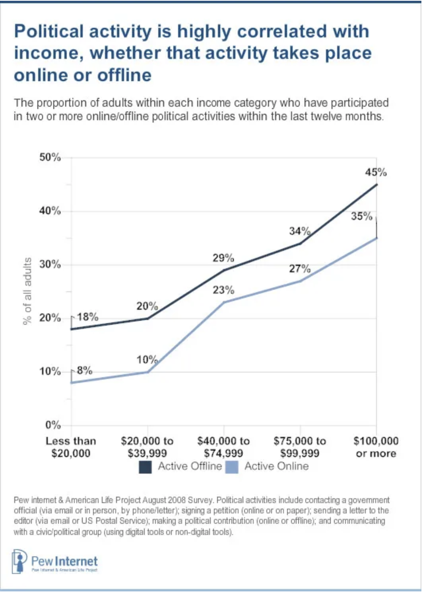
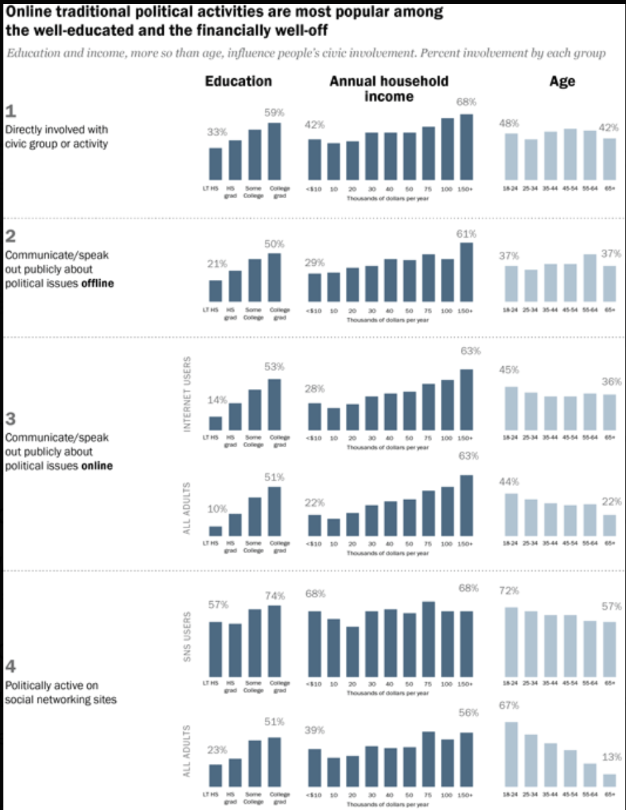

Scrolling through your social media feed is like walking through a digital town square voices clash, movements ignite, and misinformation spreads just as quickly as truth. In today’s polarized climate, platforms like Instagram, Twitter, and TikTok have become more than just places to post selfies or memes they’re central battlegrounds for civic engagement, especially among young people. A Pew Research Center survey found that over 70% of adults under 30 say social media is an important source of political news.
But with this new accessibility comes new challenges, performative activism, echo chambers, and viral misinformation all threaten to weaken rather than strengthen civic participation. At a time when democracy feels both more accessible and more fragile than ever, we need to ask: is social media deepening engagement or distorting it?
The power of social media to mobilize civic action is undeniable. Movements like #BlackLivesMatter and #MeToo didn’t just trend—they sparked protests, influenced legislation, and empowered voices long ignored by traditional media. A 2022 meta-analysis by Shelley Boulianne found a strong positive correlation between social media use and political participation.
Still, enthusiasm online doesn’t always translate offline. A popular infographic circulated during the 2020 election showed the ease with which fake headlines designed to look real could go viral. That same election cycle, a Pew study revealed that roughly one third of Americans saw entirely false political stories on their feeds. Misinformation muddies the civic waters and undermines informed participation.
Platforms like Twitter and TikTok have lowered the barrier to entry for civic dialogue, especially for Gen Z. You no longer need a cable subscription or political science degree to join a conversation about climate policy or voting rights, you just need a phone and Wi-Fi.
Yet this accessibility is a double-edged sword. A 2023 study in Social Media + Society found that while teens were more politically aware thanks to social media, they were also more likely to experience affective polarization. In other words, the platforms encouraging political talk are also stoking division.
The term “slacktivism” gets thrown around a lot—but it’s not entirely fair. Sharing a post or changing a profile picture may seem shallow, but these actions can raise awareness. In Mexico’s “El Bronco” campaign, researchers found that digital engagement actually helped an independent candidate win against all odds. Still, short term outrage rarely turns into long term commitment without real infrastructure.
Here’s the real issue: we’ve built a generation of connected citizens, but not necessarily critical ones. The ease of access to civic content has outpaced our ability to evaluate it.
According to the National Council for the Social Studies, digital literacy should be as essential as math or history in today’s classrooms. Yet civic education hasn’t kept up. Many students can scroll endlessly through a feed but struggle to distinguish fact from opinion or identify credible sources.
To fix this, schools must adopt robust media literacy programs, and platforms must become more transparent about how their algorithms prioritize content. The Century Foundation argues that public education must once again teach civic readiness this time with a digital edge.
If we don’t act now, we risk raising a generation of citizens who are politically active online but disengaged in real world democratic processes. To prevent this, schools and communities must invest in digital literacy education that teaches young people how to critically evaluate online content and engage meaningfully. Social media companies also have a responsibility to create transparent algorithms and tools that promote credible information and discourage echo chambers. In five years, we could see a more informed and engaged electorate one that uses social media not just to react, but to lead and participate. The time to build that future is now.